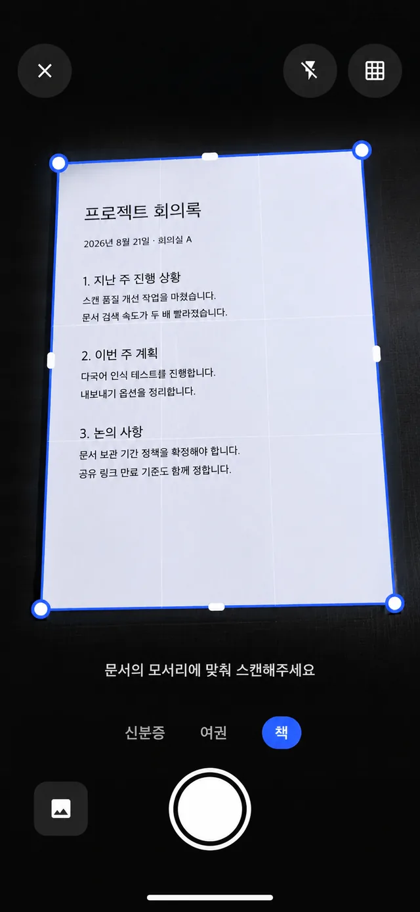
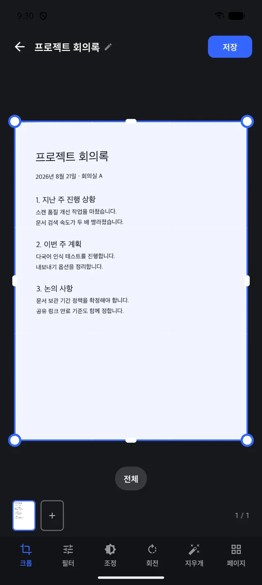
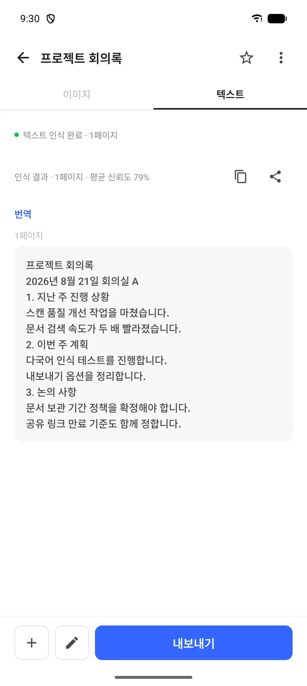
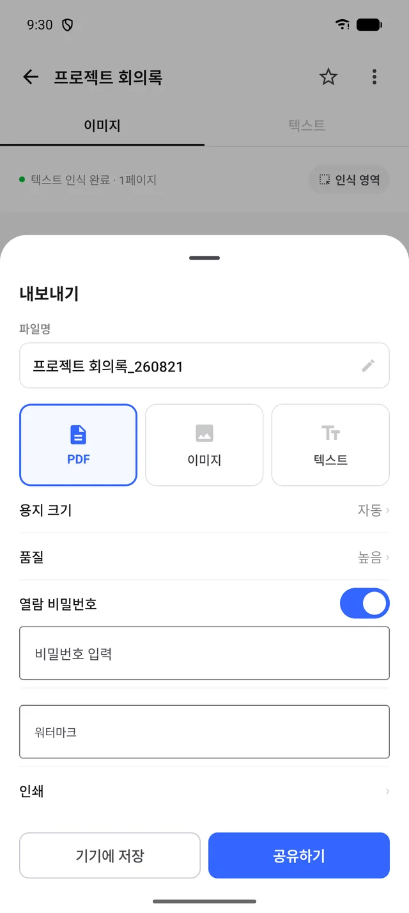
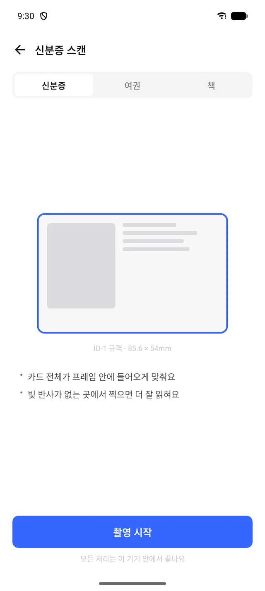

문서를 찍으면,
바로 텍스트로.
모서리 자동 인식으로 슥— 찍고, OCR로 텍스트를 뽑고, PDF로 내보내기까지. 모든 처리는 이 기기 안에서 끝나요.
온디바이스 처리
신분증·여권·책 모드
PDF·이미지·텍스트 내보내기

FEATURES
스캔부터 내보내기까지, 한 흐름으로
모서리 자동 인식 스캔
문서 모서리를 실시간으로 잡아 반듯하게 보정합니다. 플래시·격자·갤러리 불러오기 지원.
OCR 텍스트 인식
페이지별 인식 결과와 평균 신뢰도를 보여주고, 복사·공유·번역까지 바로 이어집니다.
신분증·여권·책 모드
ID-1 규격 가이드에 맞춰 카드류를 정확히 스캔하고, 여권·책 모드도 준비되어 있습니다.
똑똑한 내보내기
PDF·이미지·텍스트로 내보내고 용지 크기·품질을 설정합니다. 열람 비밀번호와 워터마크도 걸 수 있어요.
여러 페이지 문서
페이지를 이어서 추가하고 크롭·필터·회전·지우개로 페이지별로 다듬을 수 있습니다.
온디바이스 처리
스캔·인식·저장 모두 기기 안에서 처리됩니다. 문서가 서버로 전송되지 않아요.
SCREENS
화면으로 미리 만나보세요
옆으로 넘겨보세요 →
01
스캔
모서리에 맞추면 자동 인식 — 신분증·여권·책 모드 전환.

02
편집
크롭·필터·조정·회전·지우개, 페이지 추가까지.

03
텍스트
인식 결과와 신뢰도 확인, 복사·공유·번역.

04
내보내기
PDF·이미지·텍스트, 비밀번호·워터마크 설정.

05
신분증 스캔
ID-1 규격 가이드 — 처리는 전부 기기 안에서.
FAQ
자주 묻는 질문
스캔한 문서가 서버로 전송되나요?
아니요. 스캔·OCR·저장 모두 기기 안에서 처리되며, 문서가 외부로 전송되지 않습니다.
어떤 형식으로 내보낼 수 있나요?
PDF·이미지·텍스트를 지원합니다. PDF는 용지 크기·품질 설정과 함께 열람 비밀번호, 워터마크를 추가할 수 있습니다.
신분증 스캔 정보는 안전한가요?
신분증·여권 스캔도 일반 문서와 동일하게 기기 내에서만 처리됩니다. 빛 반사가 없는 곳에서 촬영하면 더 잘 인식됩니다.
여러 페이지 문서도 스캔되나요?
네. 페이지를 계속 추가해 하나의 문서로 만들고, 페이지별로 크롭·필터·회전을 다듬을 수 있습니다.
문의는 어디로 하나요?
공식 이메일 h1.soft.x001@gmail.com 로 보내주시면 됩니다.
MORE FROM H1SOFT